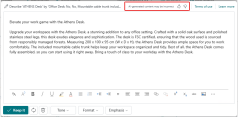

Häufig gestellte Fragen zu Vorschlägen für Marketingtexte mit Copilot
Diese häufig gestellten Fragen beschreiben die KI-Auswirkungen des Marketingtextvorschläge Features in Business Central.
Was sind Artikelmarketingtextvorschläge?
Copilot bietet Schreibunterstützung für Benutzende, die für das Verfassen von Marketingtexten für Artikel in Business Central verantwortlich sind. Dieses Feature ist bekannt als Marketingtextvorschläge. Das Marketingtextvorschläge-Feature bietet Schreibunterstützung für Benutzende, die für das Verfassen von Marketingtexten für Artikel in Business Central verantwortlich sind.
Dies Feature ist auf jeder Artikelkarte in Business Central verfügbar. Um es zu verwenden, öffnen Sie einfach einen Artikel und wählen Sie dann Marketingtext > Entwurf mit Copilot. Durch diese Aktion wird automatisch ein Textvorschlag generiert, der fesselnd, kreativ und spezifisch für den angezeigten Artikel ist. Vorschläge basieren auf verschiedenen Eingaben, darunter:
- Die Attribute, die Kategorie und der Name des Artikels.
- Persönliche Schreibstilvorlieben wie Tonfall, betonte Qualität, Format und Länge.
Sie können den Wert dieser Eingabeoptionen ändern, um zu beeinflussen, wie der ausgegebene KI-generierte Text aussieht. Bevor Sie einen Vorschlag speichern, können Sie ihn einfach überprüfen und auf Richtigkeit bearbeiten oder einen anderen Vorschlag ausprobieren.
Zu den wichtigsten Vorteilen dieses Features gehören:
- Reduziert den Zeitaufwand für das Verfassen von Texten, was die Markteinführungszeit für Artikel, die in Onlineshops verkauft werden, verkürzen kann.
- Setzt Kreativität frei, sodass ansprechendere Produktbeschreibungen bereitgestellt werden können.
- Stärkt die Einheitlichkeit von Marketingmaterial für Produktlinien.
Welche Funktionalitäten hat das System?
Das Marketingtextvorschläge-Feature verwendet den Azure OpenAI-Dienst von Microsoft, um auf leistungsstarke Sprachmodelle zuzugreifen, die natürliche Sprache analysieren und generieren. Diese Modelle wurden mit einer Vielzahl von Textdatensätzen trainiert. Infolgedessen kann Copilot basierend auf einer minimalen Menge an Eingabedaten, wie den Attributen, der Kategorie oder Beschreibung eines Artikels, vorgeschlagene, personalisierte Antworten auf Englisch generieren.
Was ist der Verwendungszweck des Systems?
Dieses Feature soll Benutzenden bei der Erstellung von Marketingtexten für Artikel in Business Central unterstützen. Verfassende nutzen das Feature, um schnell überzeugende und ansprechende Textvorschläge zu erhalten, die dann überprüft und auf ihre Richtigkeit hin bearbeitet werden.
Wie wurde der Artikelmarketingtext bewertet? Welche Metriken werden verwendet, um die Leistung zu messen?
- Das Feature wurde umfangreichen Tests unterzogen, bei denen zahlreiche Texte in verschiedenen Sprachen von Sprachexperten anhand verschiedener Kriterien bewertet wurden. Die Tests basierten auf den Business Central Demonstrationsdaten und anderen fiktiven Produktkatalogen.
- Dieses Feature basiert auf dem Standard für verantwortungsbewusste KI von Microsoft. Erfahren Sie mehr über verantwortungsbewusste KI von Microsoft.
Wie überwacht Microsoft die Qualität der generierten Inhalte?
Microsoft verfügt über verschiedene Systeme, um sicherzustellen, dass die Copilot-Funktionen jederzeit einsatzbereit sind und Inhalte von höchster Qualität generieren.
Benutzende haben die Möglichkeit, Feedback zu geben, um unangemessene Inhalte zu melden und die Funktionalität zu verbessern.
Wenn Sie auf unangemessen generierte Inhalte stoßen, melden Sie diese Microsoft mithilfe dieses Feedbackformulars: Missbrauch melden.
Microsoft kann die Copilot-gesteuerten Features für ausgewählte Kundschaft deaktivieren, wenn ein Missbrauch der Funktionalität festgestellt wird.
Wir verfolgen Benutzerfeedback zu Marketingtextvorschläge, um uns bei der Verbesserung von Vorschlägen zu helfen.
Sie geben Feedback, indem Sie das Symbol „Gefällt mir“ (Daumen hoch) oder „Gefällt mir nicht“ (Daumen runter) auf der Seite Copilot in Business Central verwenden. Wir erfassen die Telemetrie dieser Gesten für jede KI-Ausgabe, für die Sie Feedback senden.

Der Azure OpenAI-Dienst speichert Eingabeaufforderungen und Vervollständigungen des Dienstes, um sie auf die missbräuchliche Verwendung zu überwachen und die Qualität der Content-Management-Systeme von Azure OpenAI weiterzuentwickeln und zu verbessern. Erfahren Sie mehr über unser Content Management und die Inhaltsfilterung. Ihre Unternehmensdaten werden nicht zum Trainieren von KI-Modellen im Azure OpenAI Dienst verwendet.
Befugte Microsoft-Mitarbeitende können auf Eingabeaufforderungs- und Erfassungsdaten zugreifen, die unsere automatisierten Systeme ausgelöst haben, um potenziellen Missbrauch zu untersuchen und zu überprüfen. Wenn Kunden Business Central in der Europäischen Union verwenden, befinden sich die autorisierten Microsoft-Mitarbeitenden in der Europäischen Union. Diese Daten können zur Verbesserung unserer Content-Management-Systeme verwendet werden. Im Falle eines bestätigten Richtlinienverstoßes können wir Sie bitten, unverzüglich Maßnahmen zu ergreifen, um das Problem zu beheben und weiteren Missbrauch zu verhindern. Wenn das Problem nicht behoben wird, kann der Zugriff auf Azure OpenAI-Ressourcen ausgesetzt oder beendet werden.
Weitere Informationen finden Sie unter Daten, Datenschutz und Sicherheit für den Azure OpenAI-Dienst.
Gibt es einen Protokollierungs- und menschlichen Überprüfungsprozess für den Azure OpenAI Dienst, und wenn ja, kann ich mich abmelden?
Im Rahmen der Bereitstellung der Azure OpenAI-Dienst verarbeitet und speichert Microsoft an den Dienst übermittelte Kundendaten sowie ausgegebene Inhalte zum Zwecke der Überwachung und Verhinderung missbräuchlicher oder schädlicher Nutzungen oder Ausgaben des Diensts; und des Entwickelns, Testens und Verbesserns von Fähigkeiten, die darauf ausgelegt sind, die missbräuchliche Nutzung oder schädliche Ausgaben des Dienstes zu verhindern.
Autorisiertes Microsoft-Personal kann Daten überprüfen, die unsere automatisierten Systeme ausgelöst haben, um potenziellen Missbrauch zu untersuchen und zu überprüfen, und kann eine begrenzte Stichprobe von Begriffen entnehmen, die nicht von unseren automatisierten Systemen gekennzeichnet wurden, um sicherzustellen, dass die Systeme ordnungsgemäß funktionieren. Befugtes Microsoft-Personal kann auch auf diese Daten zugreifen und sie verwenden, um unsere Systeme zu verbessern, die missbräuchliche oder schädliche Nutzungen oder Ausgaben des Dienstes überwachen und verhindern. Mehr darüber erfahren Sie unter Nutzungsbedingungen der Vorschauversion.
Damit Microsoft den Dienst und seine Kundschaft schützen kann, ist es nicht möglich, die Protokollierungs- und menschlichen Überprüfungsprozesse zu deaktivieren.
Welche Daten erfasst die Funktion? Wie werden die Daten verwendet?
Die Funktion für Marketingtextvorschläge erfasst die Mindestdaten, die Business Central zum Anbieten des Dienstes benötigt. Weitere Informationen finden Sie unter Dynamics 365-Bedingungen für Azure OpenAI-basierte Features.
Die Funktion sammelt auch Daten aus dem Feedback, das Benutzende über die Symbole „Gefällt mir“ (Daumen hoch) oder „Gefällt mir nicht“ (Daumen runter) oben auf der Copilot-Seite geben können. Die Daten sind anonym und umfassen die Auswahl zwischen „Gefällt mir“ oder „Gefällt mir nicht“, gegebenenfalls den Grund für die Ablehnung und das Copilot-Feature, auf das sich das Feedback bezieht. Wir verwenden diese Daten, um die Qualität der Funktion zu bewerten und zu verbessern.
Welche Einschränkungen gelten für Marketingtextvorschläge? Wie können Benutzende die Auswirkungen der Marketingtextvorschläge-Einschränkungen bei der Nutzung des Systems minimieren?
Da die zugrunde liegende Technologie des Features KI verwendet, die anhand einer Vielzahl von Quellen trainiert wurde, sind die generierten Inhalte nicht immer sachlich korrekt oder angemessen. Manche Vorschläge können sogar fragwürdige oder unangemessene Inhalte enthalten. Sie sind selbst dafür verantwortlich, generierte Vorschläge zu überprüfen und zu bearbeiten, um sicherzustellen, dass sie korrekt und angemessen sind.
Verfügbare Sprachen
Diese Copilot-Funktion wurde validiert und wird nur in den folgenden Sprachen unterstützt: |Sprache|Gebietsschema| |-|-| |Englisch (USA)|en-AU, en-CA, en-GB, en-IE, en-IN, en-NZ, en-PH, en-SG, en-US, en-ZA| |Französisch|fr-FR, fr-BE, Fr-CA, fr-CH| |Deutsch|de-DE, de-AT, de-CH| |Spanisch |es-ES, es-MS, es-CO, es-PE| |Dänisch|da-DK| |Niederländisch|nl-NL, nl-BE| |Italienisch|it-IT, it-CH| |Japanisch|ja-JP| Obwohl es in anderen Sprachen verwendet werden kann, funktioniert es möglicherweise nicht wie vorgesehen. Die Sprachqualität kann je nach Benutzerinteraktion oder Systemeinstellungen variieren, was sich auf die Genauigkeit und das Benutzererlebnis auswirken kann.
Welche betrieblichen Faktoren und Einstellungen lassen eine effektive und verantwortungsvolle Nutzung des Systems zu?
Sie können ein paar Dinge unternehmen, um das Feature optimal zu nutzen:
- Fügen Sie einem Artikel weitere Attribute hinzu, um die spezifischen Merkmale und Eigenschaften zu fördern, an denen Sie interessiert sind.
- Passen Sie die Optionen für Tonfall und die Betonung der Qualität an Ihre persönlichen Präferenzen an.
- Die Beschreibung des Artikels verbessern.
- Stellen Sie sicher, dass dem Artikel die am besten geeignete Kategorie zugewiesen ist.
Weitere Informationen finden Sie unter Textvorschläge verbessern und anpassen.
Tipp
Überprüfen Sie die Vorschläge immer auf ihre Richtigkeit, bevor Sie sie speichern und zur öffentlichen Nutzung veröffentlichen.
Siehe auch
Kostenlose E-Learning-Module für Business Central finden Sie hier